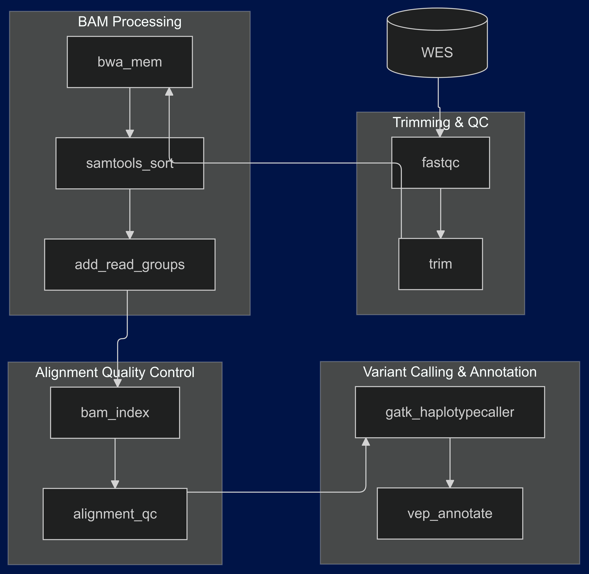

Leogene Reproductive Genomics Project
I was approached by the Leogene representative with the idea of developing their practice of reproductive medicine using genomic data and computational methods.
Project Setup
The setup was as follows:
- I wrote code on a remote server in Snakemake.
- The environment management was done using Conda.
Challenges
As the servers were located in Lviv, Ukraine, the shortages of electricity made it sometimes really hard to run samples.
Workflow Diagram

Conclusion
It was really fun, and we are about to see how it will impact patients!